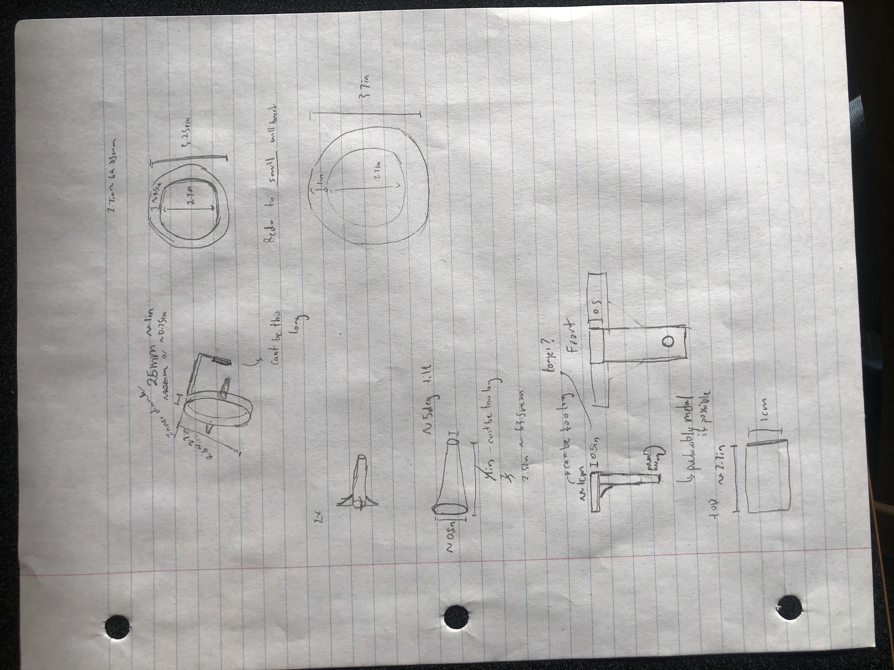
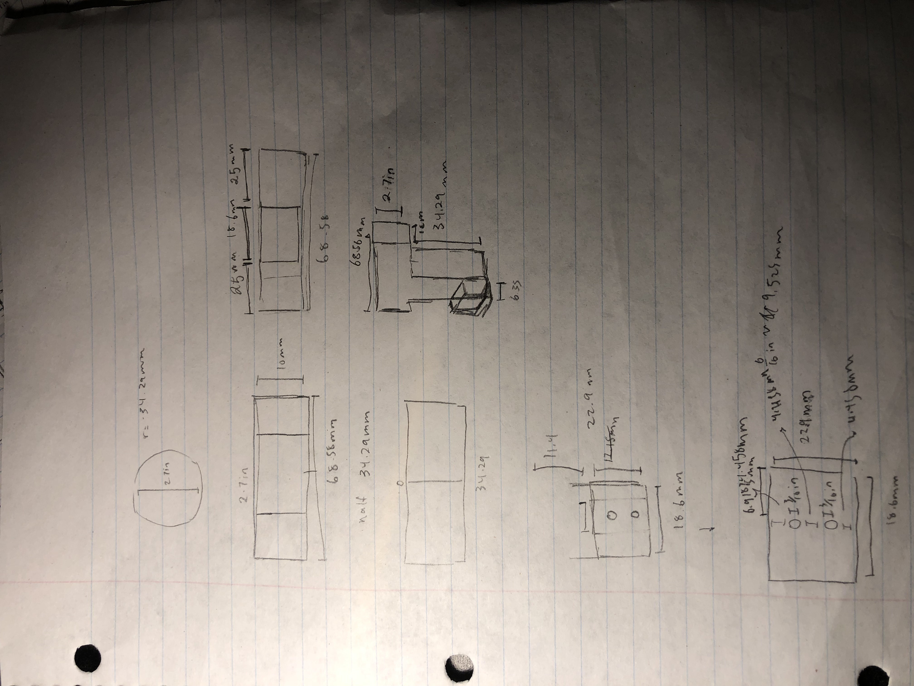
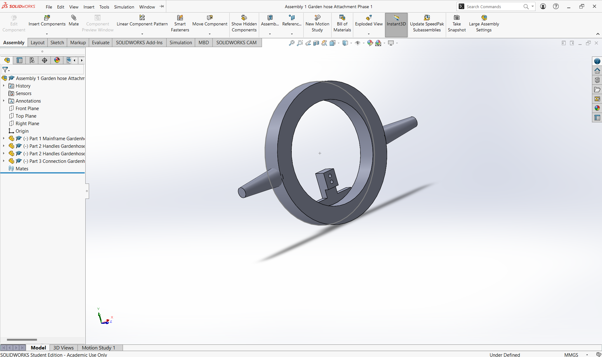
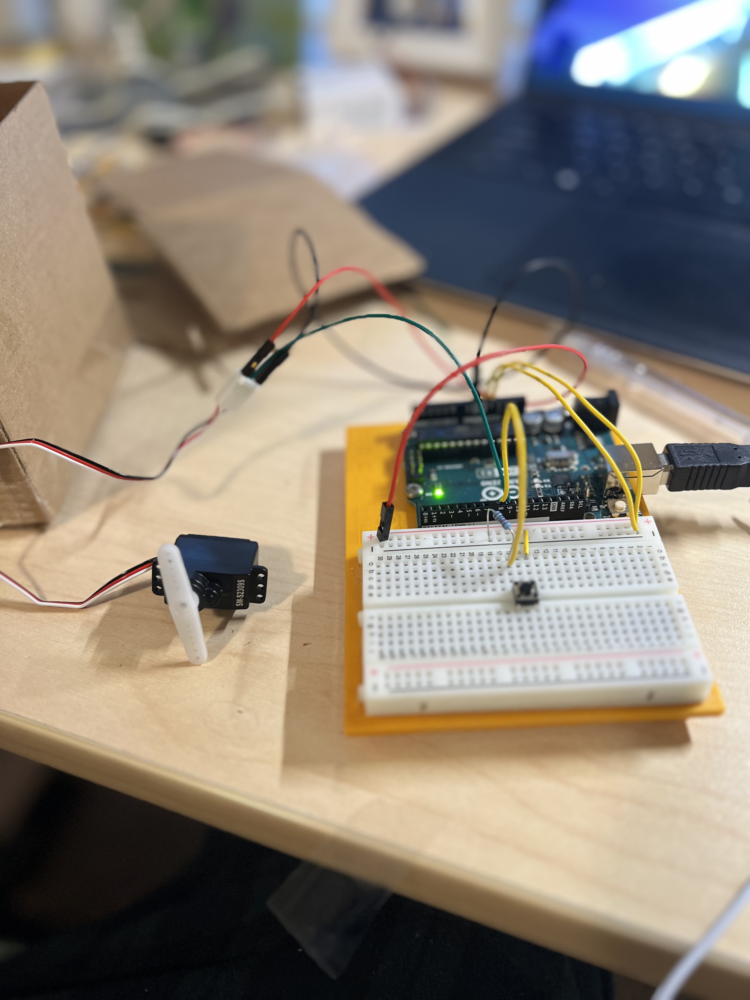
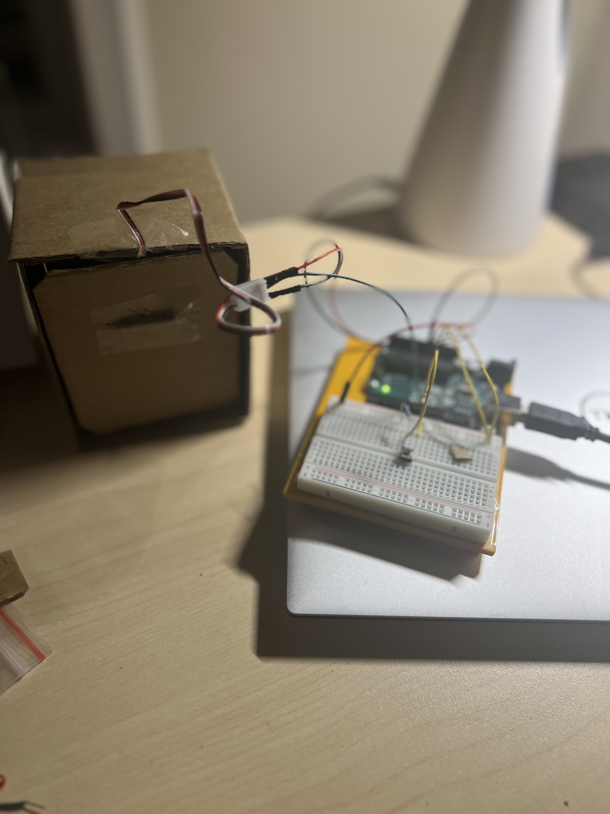

I got tired of putting my earbuds in my pocket and it becoming a tangeled mess within five seconds and untangling them, as a result I designed this earbud holder.
As a way to hold earbuds I produced a series of prototypes (lost them) and went through a design process to find the optimal size. My first one was similar to a donut and was too small to fit the entire wire, and my second one was structurally unstable and broke.
I ended up with this two hole donut design, if I did use wires, this would ensure all that the wires were untangled and the structure was stable. This was made in sketchup then 3d printed
This is a prototype on Solidworks of a waterhose attachment that should make watering hoses for those with a hand impairment more accesible, our group designed several designs on solidworks, fortunatly a better model moved forward as was presented.
  
This is my first fully individual ardiuno project, initially it was planned to make a garbage can but some difficulty with the hinge the project turned into a servo powered container
 